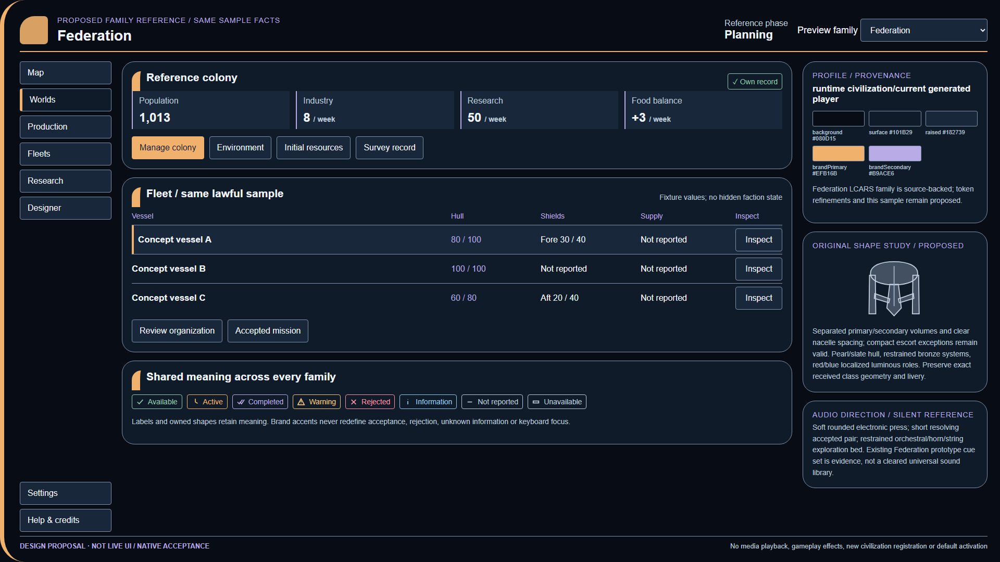
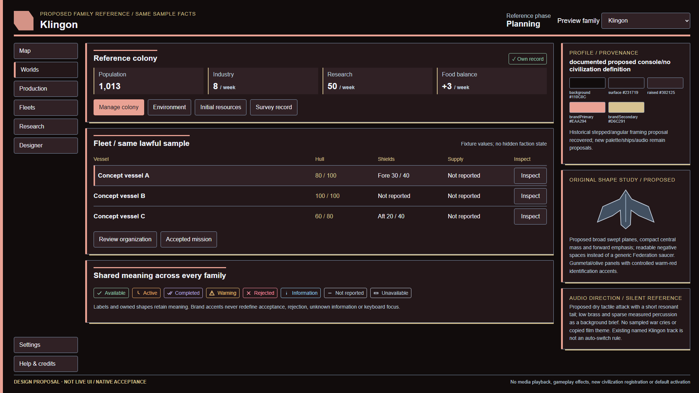
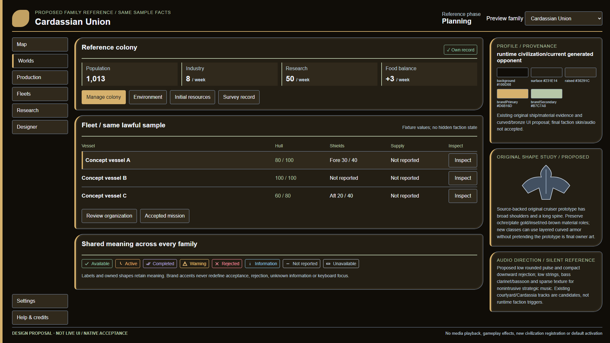
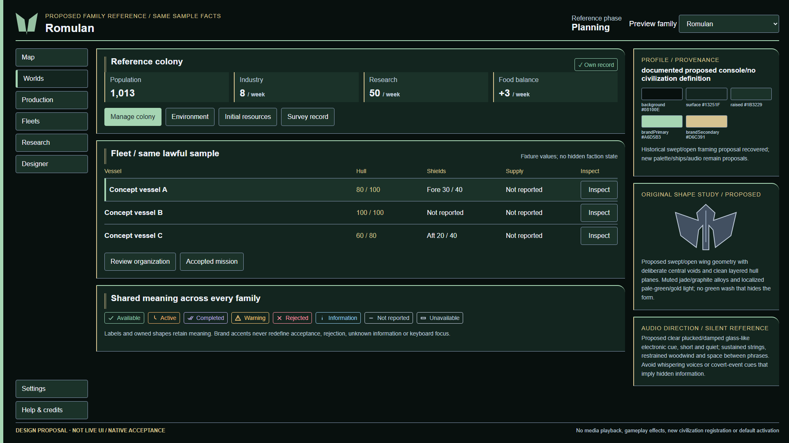
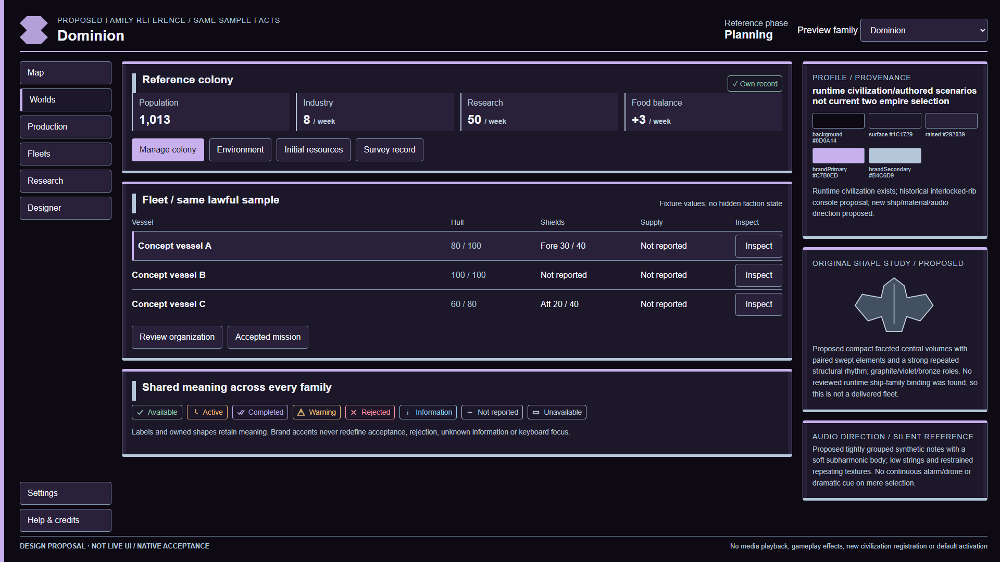
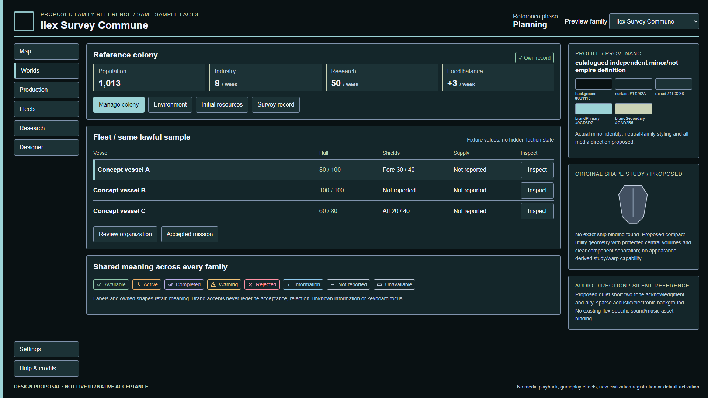
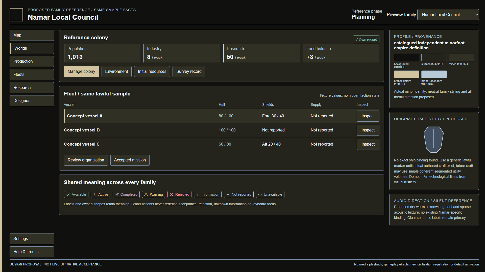
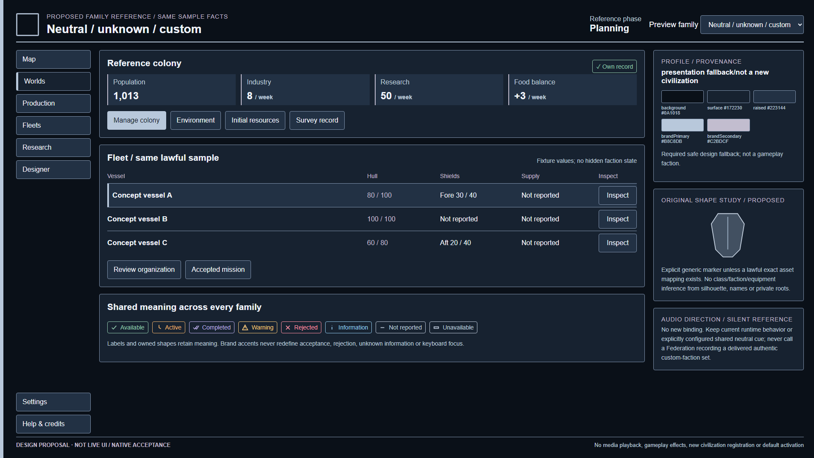

Five documented theme families, two actual minor societies and neutral fallback. New designs are proposals; identity status is explicit. Click a card for the full1920reference.

asymmetric elbow rail

stepped angular brackets

layered curved junctions

swept open junctions

interlocked ribs

plain rectilinear

